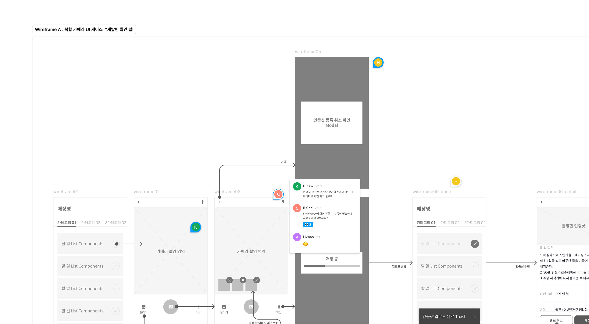
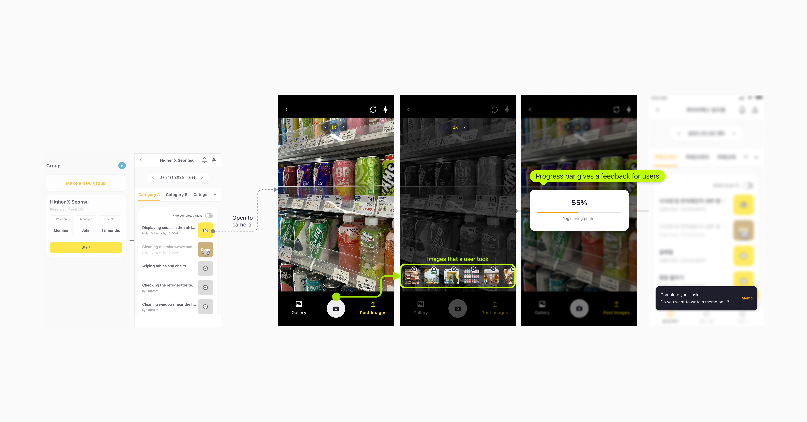

UX Design · Mobile App · Hybrid App
WKDK — IMPROVING UX FLOW OF
SAVING PHOTOS ON HYBRID MOBILE APP

About the Product
What is WKDK?
WKDK (Wokie Dokie) is a Korean mobile app for store management, focused on part-time staff management for restaurants, cafés, convenience stores, retail shops, and franchise businesses.

Task & Checklist
Daily tasks with photo verification.

Shift & Schedule
Organize shifts and coordinate handovers.

Recruitment
Hire workers and onboard via system flow.

Internal Communication
Announcements and chat for store workers.
Outcome
+25%
Increase in daily photo upload rate after redesign
+120
Additional photo verifications per day on average
ADT Cap.
New B2B enterprise client secured following the update
Redesigning the photo-saving flow reduced friction at the most critical touchpoint in the app — turning a common drop-off moment into a measurable increase in core engagement, and directly enabling enterprise expansion.
Context
01
A Growing App
with an Aging Flow
WKDK is a store management mobile app used by frontline workers — restaurant staff, retail crews, franchise operators — to verify daily tasks via photo records.
As the user base grew and new features were added, the original photo-saving flow stopped matching how workers actually operated on-site. Misuse, confusion, and server errors started surfacing.

02
B2B Expansion
Was on the Table
The team was in active discussions with ADT Cap. to bring WKDK into their field security operations.
This raised the stakes — enterprise clients require onboarding speed, minimal cognitive load, and a flow that works reliably even in fast-paced, high-pressure environments.

Problem
" Too long to complete my task in a minute! "
The core issue wasn't a missing feature — it was a disconnect between how the app was designed and how the work actually happened in the field.
"
We need to attach multiple photos for 1 task.
Multiple-photo verifications accounted for approximately 40% of all task completions — yet the flow was built as if one photo was always enough.

"
But I'm lost while I tried to attach photos.
3–5 VOCs per month reported directly about photo attachment. The bounce rate on the "Select attachment method" screen hit 70% — users were reaching a decision point and abandoning.

Research & Validation
The team proposed merging photo editing into the camera screen itself — eliminating the separate editing step that was causing the drop-off. But before shipping, we needed to know: would workers actually accept editing features on a camera interface? It wasn't an obvious leap.

Take photo → separate editing page → attach. The existing mental model.

Take photo → edit directly on camera screen → attach. One fewer step.
6 participants — 4 coworkers not involved with this project + 2 Brwnie crews
*Brwnie: unmanned store management service by the same company — similar frontline user profile
Which one was the better option for processing tasks easier and faster?

Did you feel awkward in the flow of B? Which part?

How do you feel about editing photos on the camera screen — positive or negative?

Is A's editing page, which appears after the camera, necessary?

Scenario B won on every dimension that mattered for field use.
All 6 testers found Scenario B faster and easier — no split vote.
No one flagged camera-integrated editing as confusing or awkward.
Most testers said A's separate editing page felt unnecessary — one extra screen for no reason.
Design Decision
Remove the intermediate editing screen entirely. Move all editing controls — crop, rotate, annotation — into the camera interface itself. One fewer screen means one fewer moment to lose a frontline worker mid-task.
Enterprise users like ADT Cap. operatives work under time pressure. Every extra tap is a failure risk. Collapsing the flow wasn't just a UX preference — it was a prerequisite for the B2B use case we were building toward.

Design System Layer
The photo-saving feature redesign ran in parallel with a broader system effort: architecting HDS WEB, the company's design system. Rather than designing this flow as a one-off, every component was built on a token foundation — color, typography, spacing, and component behaviour all defined as reusable variables via Figma Token Studio, synced with GitHub.
In 2022, Figma had no native token support. We used the Token Studio plugin to connect design variables directly to the codebase. This meant a brand colour change or spacing update could propagate to every screen without manual rework — critical for an app being extended into enterprise contexts with stricter consistency requirements.

Final Interface
The redesigned flow puts editing controls directly in the camera view — users capture, annotate, and attach without leaving the screen. Multiple photos are handled in a single session. The result is a flow that matches the pace of a real workplace shift.




Result & Reflection
+25% photo upload rate — core engagement unlocked
Daily photo verifications increased by over 120 on average — a 25% jump. More than a metric, this signalled that users were finally completing the task the app was built around. The feature stopped being a friction point and started being a habit.

B2B foundation — ADT Cap. secured
The UX improvement directly enabled the ADT Cap. partnership — an enterprise client whose use case required a fast, low-friction verification flow. This opened WKDK to property management and outsourced operations sectors, driving the user growth spike in H2.